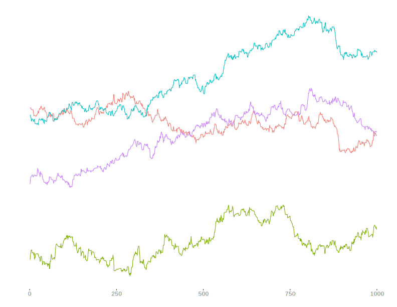

Diagnostica delle catene markoviane
Contents
Diagnostica delle catene markoviane#
Le catene di Markov forniscono un’approssimazione che tende a convergere alla distribuzione a posteriori. “Approssimazione” e “convergenza” sono le parole chiave: il punto è che il campionamento MCMC non è perfetto. Questo solleva le seguenti domande:
A cosa corrisponde, dal punto di vista grafico, una “buona” catena di Markov?
Come possiamo sapere se il campione prodotto dalla catena di Markov costituisce un’approssimazione adeguata della distribuzione a posteriori?
Quanto deve essere grande la dimensione del campione casuale prodotto dalla catena Markov?
Rispondere a queste ed altre domande di questo tipo fa parte di quell’insieme di pratiche che vanno sotto il nome di diagnostica delle catene Markoviane.
La diagnostica delle catene Markoviane non è “una scienza esatta”. Ovvero, non sono disponibili procedure che risultano valide in tutti i casi possibili e non sempre è possibile rispondere a tutte le precedenti domande. È piuttosto l’esperienza del ricercatore che consente di riconoscere una “buona” catena di Markov e a suggerire cosa si può fare per riparare una “cattiva” catena di Markov. In questo Capitolo ci concentreremo su alcuni strumenti diagnostici grafici e numerici che possono essere utilizzati per la diagnostica delle catene markoviane. L’utilizzo di questi strumenti diagnostici deve essere eseguito in modo olistico. Nessuna singola diagnostica visiva o numerica è sufficiente: un quadro completo della qualità della catena di Markov si può solo ottenere considerando tutti gli strumenti descritti di seguito.
Esame dei trace plot#
La convergenza e il “mixing” possono essere controllate mediante il trace plot che mostra l’andamento delle simulazioni e ci dice se stiamo effettivamente utilizzando una distribuzione limite. In generale, cerchiamo un grafico che mostri una dispersione casuale attorno a un valore medio: in tali circostanze i risultati del modello suggeriscono che le catene si mescolano bene e che le impostazioni della MCMC sono adeguate. Una mancanza di convergenza è invece indicata dalla figura seguente:

Le catene non convergono né si mescolano tra loro. Uno dei motivi per l’esecuzione di più catene è che ogni singola catena potrebbe convergere verso un target, mentre un’altra catena potrebbe convergere su un target diverso, e questo sarebbe un problema. Inoltre, catene altrimenti sane possono bloccarsi occasionalmente nel corso della serie, il che suggerirebbe la necessità di modifiche al modello o alle impostazioni del campionatore. Un altro modo per valutare la convergenza dell’algoritmo è plottando la densità della distribuzione a posteriori degli effetti stimati, assicurandoci che si avvicini ad una classica curva a campana.
In pratica, non abbiamo mai il privilegio di poter confrontare i risultati del campionamento MCMC con la corretta distribuzione a posteriori. Ecco perché la diagnostica delle catene di Markov è così importante: se vediamo trace-plots come i precedenti, sappiamo che non abbiamo ottenuto una approssimazione adeguata della distribuzione a posteriori. In tali circostanze possiamo ricorrere ad alcuni rimedi.
Controllare il modello. Siamo sicuri che le distribuzioni a priori e la verosimiglianza siano appropriate per i dati osservati?
Utilizzare un numero maggiore di iterazioni. Alcune tendenze indesiderate a breve termine della catena possono appianarsi nel lungo termine.
Numerosità campionaria effettiva#
Nel campionamento si ottengono \(n\) campioni dipendenti dei parametri \(\theta\). Sapendo che l’errore dell’approssimazione alla distribuzione a posteriori è probabilmente più grande di quello che si otterrebbe usando \(n\) campioni indipendenti, ci possiamo chiedere: quanti campioni indipendenti sarebbero necessari per produrre un’approssimazione della distribuzione a posteriori equivalentemente a quella che abbiamo ottenuto? La numerosità campionaria effettiva (effective sample size, \(N_{eff}\)) fornisce una risposta a questa domanda.
Tipicamente, \(N_{eff} < N\), per cui il rapporto campionario effettivo (effective sample size ratio) \(\frac{N_{eff}}{N}\) è minore di 1. Come regola euristica, viene considerato problematico un rapporto campionario effettivo minore del 10% del numero totale di campioni ottenuti nella simulazione (più basso è il rapporto campionario effettivo peggiore è il “mixing” della catena).
Autocorrelazione#
Normalmente un algoritmo MCMC genera catene di Markov di campioni ognuno dei quali è autocorrelato a quelli generati immediatamente prima e dopo di lui. Conseguentemente campioni successivi non sono indipendenti ma formano una catena di Markov con un certo grado di correlazione. Il valore \(\theta^{(i)}\) tende ad essere più simile al valore \(\theta^{(i-1)}\) che al valore \(\theta^{(i-2)}\), o al valore \(\theta^{(i-3)}\), eccetera. Una misura di questo è fornita dall’autocorrelazione tra i valori consecutivi della catena.
Il correlogramma mostra l’autocorrelazione in funzione di ritardi da 0 a 20. L’autocorrelazione di lag 0 è naturalmente 1 – misura la correlazione tra un valore della catena di Markov e se stesso. Se l’autocorrelazione di lag 1 non è troppo grande, indicando una correlazione moderata tra i valori della catena che distano di solo 1 passo l’uno dall’altro, e, successivamente, diminuisce rapidamente, questo indica che la catena di Markov costituisce una buona approssimazione di un campione casuale di \(p(\theta \mid y)\).
Una (famiglia di) catene di Markov si dice rapidly mixing se mostra un comportamento simile a quello di un campione indipendente: i valori delle catene si addensano nell’intervallo dei valori più plausibili della distribuzione a posteriori; l’autocorrelazione tra i valori della catena diminuisce rapidamente; il rapporto campionario effettivo è ragionevolmente grande. Le catene che non sono rapidly mixing non godono delle caratteristiche di un campione indipendente: le catene non si addensano nell’intervallo dei valori più plausibili della distribuzione a posteriori; l’autocorrelazione tra i valori della catena diminuisce molto lentamente; il rapporto campionario effettivo è piccolo.
In presenza di catene di Markov non rapidly mixing sono possibili due rimedi.
Aumentare il numero di iterazioni. Anche una catena non rapidly mixing può produrre eventualmente una buona approssimazione della distribuzione a posteriori se il numero di iterazioni è sufficientemente grande.
Thinning. Per esempio, se la catena di Markov è costituita da 16000 valori di \(\theta\), potremmo decidere di conservare solo ogni secondo valore e ignorare gli altri valori: \(\{\theta^{(2)}, \theta^{(4)}, \theta^{(6)}, \dots, \theta^{(16000)}\}\). Oppure, potremmo decidere di conservare ogni decimo valore: \(\{\theta^{(10)}, \theta^{(20)}, \theta^{(30)}, \dots, \theta^{(16000)}\}\). Scartando i campioni intermedi, è possibile rimuovere le forti correlazioni che sono presenti nel caso di lag più piccoli.
Statistica \(\hat{R}\)#
In precedenza abbiamo detto che non solo è necessario che ogni singola catena sia stazionaria, ma è anche necessario che le diverse catene siano coerenti tra loro. La statistica \(\hat{R}\) affronta questo problema calcolando il rapporto tra la varianza tra le catene markoviane e la varianza entro le catene. In una situazione ottimale \(\hat{R} = 1\); se \(\hat{R}\) è lontano da 1 questo vuol dire che non è ancora stata raggiunta la convergenza.
Interpretazione: in maniera euristica possiamo dire che, se \(\hat{R}\) supera la soglia di 1.05, questo viene interpretato come evidenza che le diverse catene parallele non producono approssimazioni coerenti della distribuzione a posteriori: la simulazione è instabile.
Diagnostica di convergenza di Geweke#
La statistica diagnostica di convergenza di Geweke è basata su un test per l’uguaglianza delle medie della prima e dell’ultima parte di una catena di Markov (di default il primo 10% e l’ultimo 50% della catena). Se i due campioni sono estratti dalla distribuzione stazionaria della catena, le due medie sono statisticamente uguali e la statistica di Geweke ha una distribuzione asintotica Normale standardizzata.
Interpretazione: la statistica di Geweke è uguale a zero quando le medie delle due porzioni della catena di Markov sono uguali; valori maggiori di \(\mid 2 \mid\) suggeriscono che la catena non ha ancora raggiunto una distribuzione stazionaria.